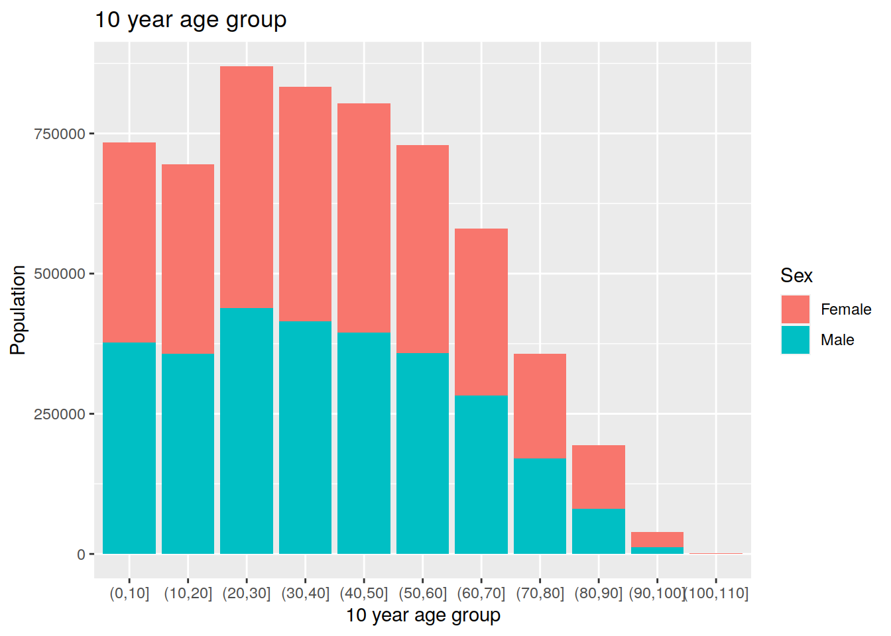
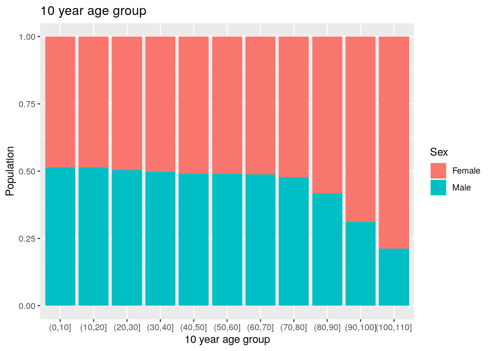

Last updated: 2019-05-30
Checks: 5 1
Knit directory: tutorials_workflowr/
This reproducible R Markdown analysis was created with workflowr (version 1.3.0.9000). The Checks tab describes the reproducibility checks that were applied when the results were created. The Past versions tab lists the development history.
Great! Since the R Markdown file has been committed to the Git repository, you know the exact version of the code that produced these results.
Great job! The global environment was empty. Objects defined in the global environment can affect the analysis in your R Markdown file in unknown ways. For reproduciblity it’s best to always run the code in an empty environment.
The command set.seed(20190513) was run prior to running the code in the R Markdown file. Setting a seed ensures that any results that rely on randomness, e.g. subsampling or permutations, are reproducible.
Nice! There were no cached chunks for this analysis, so you can be confident that you successfully produced the results during this run.
Great! You are using Git for version control. Tracking code development and connecting the code version to the results is critical for reproducibility. The version displayed above was the version of the Git repository at the time these results were generated.
Note that you need to be careful to ensure that all relevant files for the analysis have been committed to Git prior to generating the results (you can use wflow_publish or wflow_git_commit). workflowr only checks the R Markdown file, but you know if there are other scripts or data files that it depends on. Below is the status of the Git repository when the results were generated:
Ignored files:
Ignored: code/analysis/
Note that any generated files, e.g. HTML, png, CSS, etc., are not included in this status report because it is ok for generated content to have uncommitted changes.
These are the previous versions of the R Markdown and HTML files. If you’ve configured a remote Git repository (see ?wflow_git_remote), click on the hyperlinks in the table below to view them.
| File | Version | Author | Date | Message |
|---|---|---|---|---|
| html | 61d6744 | Dennis Wollersheim | 2019-05-29 | Build site. |
| Rmd | fee19ea | Dennis Wollersheim | 2019-05-29 | wflow_publish(“analysis/tutorial5.Rmd”) |
| html | 3106988 | Dennis Wollersheim | 2019-05-20 | Build site. |
| html | 7330f34 | Dennis Wollersheim | 2019-05-20 | Build site. |
| Rmd | 813ce8a | Dennis Wollersheim | 2019-05-20 | wflow_publish(“analysis/tutorial5.Rmd”) |
The final exam for this informatics C is to create graphs that match your Tableau assignment in R. The exam needs to be sumitted as a standalone R notebook, containing all the commands needed to recreate the graphs.
Start in Rstudio, by creating a new R Notebook: File -> New File -> R Notebook. Save the resulting notebook as Tutorial5.Rmd. Rmd is short for R Markdown, the language of the notebook.
An R notebook is a combination of text and R commands, that, combined together, creates a finished document. There are 3 parts to an R notebook.
Initial_r_notebook
| Version | Author | Date |
|---|---|---|
| 3106988 | Dennis Wollersheim | 2019-05-20 |
To run one line of code, as in an R file, press ctrl-shift-enter. To run all the code in an entire section, click on the left hand green arrow button (outlined in yellow highlight above). To view the entire resulting document, press the preview button.
Delete all but the header section in the document. Change the header to say “Tutorial 5”, and add the following two headings (Headings start with #).
Notebook Headings
| Version | Author | Date |
|---|---|---|
| 3106988 | Dennis Wollersheim | 2019-05-20 |
Press Preview, and note the different levels of headings.
This tutorial recreates the second Tableau tutorial, found [https://lms.latrobe.edu.au/mod/resource/view.php?id=3400237] (here), in R.
To start, we load the libraries and query the databases, accessing the same cardiac procedures and diagnosis data we used in the previous tutorials.
Initial Tutorial Notebook
| Version | Author | Date |
|---|---|---|
| 3106988 | Dennis Wollersheim | 2019-05-20 |
The above is what the final document should look like. The actual code is below.
library(tidyverse)── Attaching packages ────────────────────────────────── tidyverse 1.2.1 ──✔ ggplot2 3.1.1 ✔ purrr 0.3.2
✔ tibble 2.1.1 ✔ dplyr 0.8.1
✔ tidyr 0.8.3 ✔ stringr 1.4.0
✔ readr 1.3.1 ✔ forcats 0.4.0── Conflicts ───────────────────────────────────── tidyverse_conflicts() ──
✖ dplyr::filter() masks stats::filter()
✖ dplyr::lag() masks stats::lag()library("RPostgreSQL")Loading required package: DBIcon <- dbConnect(dbDriver("PostgreSQL"),
dbname = 'vaed_full',
host = "himsql7.latrobe.edu.au", port = 5432,
user = "dewollershei-test", password = "healthGuru")
query_diag <- "
select diag_code, admission_id, age_years, los, sameday_id, drg, sex_desc, diag_short_desc, sep_mode_desc, care_type_desc
from admission JOIN sex using (sex_id)
join admission_diagnosis using (admission_id)
join diagnosis_desc using (diag_code)
JOIN separation_mode USING (sep_mode_id)
JOIN care_type USING (care_type_id)
WHERE diag_code between 'I21' AND 'I2399';
"
cardiac_diag <- dbGetQuery( con, query_diag ) %>% as_tibble()
#
query_proc <- "
select procedure_code, admission_id, age_years, los, sameday_id, drg, sex_desc, procedure_short_desc, block_desc, sep_mode_desc, care_type_desc
from admission JOIN sex using (sex_id)
join admission_procedure using (admission_id)
join procedure_desc using (procedure_code)
join block using (block)
JOIN separation_mode USING (sep_mode_id)
JOIN care_type USING (care_type_id)
WHERE block_desc like '%cardiac%'
AND block_desc not like 'Closure%'
AND block_desc not like '%catheter%'
AND block_desc not like 'Gated%' "
#
cardiac_proc <- dbGetQuery( con, query_proc ) %>% as_tibble()
#
did_disconnect <- dbDisconnect( con )Later in the tutorial, you will need the population data. Download the population dataset from here, and upload it to rstudio.
library('readxl')
library('janitor')
Attaching package: 'janitor'The following objects are masked from 'package:stats':
chisq.test, fisher.testpopulation <-
read_excel('populationVictoria_2014_long.xlsx') %>%
clean_names()As in tutorial 2, but this time, are using data that we have retrieved directly from the database.
library(scales)
Attaching package: 'scales'The following object is masked from 'package:purrr':
discardThe following object is masked from 'package:readr':
col_factorggplot( cardiac_proc ) +
geom_bar( aes( block_desc, fill=sex_desc)) +
coord_flip()+
ylab('Number of Patients') +
xlab('Block Description') +
scale_fill_discrete(name = 'Sex' ) +
scale_x_discrete(labels = wrap_format(40))
| Version | Author | Date |
|---|---|---|
| 7330f34 | Dennis Wollersheim | 2019-05-20 |
The only difference between this graph and the one above is that geom_bar now has a parameter position='fill'.
ggplot( cardiac_proc ) +
geom_bar( aes( block_desc, fill=sex_desc), position = 'fill') +
coord_flip()+
ylab('Proportion of Patients') +
xlab('Block Description') +
scale_fill_discrete(name = 'Sex' ) +
scale_x_discrete(labels = wrap_format(40))
| Version | Author | Date |
|---|---|---|
| 7330f34 | Dennis Wollersheim | 2019-05-20 |
cardiac_proc %>%
mutate( ten_year_age_group = cut( age_years, breaks=10 * (0:12 ))) %>%
ggplot( ) +
geom_bar( aes( ten_year_age_group, fill=sex_desc)) +
ylab('Number of Patients') +
xlab('10 year age group') +
scale_fill_discrete(name = 'Sex' ) +
ggtitle( '10 year age group')
| Version | Author | Date |
|---|---|---|
| 7330f34 | Dennis Wollersheim | 2019-05-20 |
cardiac_proc %>%
mutate( ten_year_age_group = cut( age_years, breaks=10 * (0:12 ))) %>%
ggplot( ) +
geom_bar( aes( ten_year_age_group, fill=sex_desc), position='fill') +
ylab('Proportion of Patients') +
xlab('10 year age group') +
scale_fill_discrete(name = 'Sex' ) +
ggtitle( '10 year age group')
| Version | Author | Date |
|---|---|---|
| 7330f34 | Dennis Wollersheim | 2019-05-20 |
How many people, and at what age and gender, do people have cardiac infarct?
cardiac_diag %>%
mutate( ten_year_age_group = cut( age_years, breaks=10 * (0:12 ))) %>%
ggplot( ) +
geom_bar( aes( ten_year_age_group, fill=sex_desc)) +
ylab('Number of Patients') +
xlab('10 year age group') +
scale_fill_discrete(name = 'Sex' ) +
ggtitle( '10 year age group')
| Version | Author | Date |
|---|---|---|
| 7330f34 | Dennis Wollersheim | 2019-05-20 |
What proportion of each gender have had cardiac Infarct?
cardiac_diag %>%
mutate( ten_year_age_group = cut( age_years, breaks=10 * (0:12 ))) %>%
ggplot( ) +
geom_bar( aes( ten_year_age_group, fill=sex_desc), position='fill') +
ylab('Proportion of Patients') +
xlab('10 year age group') +
scale_fill_discrete(name = 'Sex' ) +
ggtitle( '10 year age group')
| Version | Author | Date |
|---|---|---|
| 7330f34 | Dennis Wollersheim | 2019-05-20 |
Here, we need to group together, and add up, the populations for each age group and gender. The sum function in summarise adds up all the ages in the group. In addition to sum, min, max, mean, and median are also usable in summarise.
population %>%
mutate( ten_year_age_group = cut( age, breaks=10 * (0:12 ))) %>%
group_by( gender, ten_year_age_group ) %>%
summarise( population = sum( population )) %>%
ggplot( ) +
geom_col( aes( ten_year_age_group, y=population, fill=gender)) +
ylab('Population') +
xlab('10 year age group') +
scale_fill_discrete(name = 'Sex' ) +
ggtitle( '10 year age group')
| Version | Author | Date |
|---|---|---|
| 7330f34 | Dennis Wollersheim | 2019-05-20 |
population %>%
mutate( ten_year_age_group = cut( age, breaks=10 * (0:12 ))) %>%
group_by( gender, ten_year_age_group ) %>%
summarise( population = sum( population )) %>%
ggplot( ) +
geom_col( aes( ten_year_age_group, y=population, fill=gender), position='fill') +
ylab('Population') +
xlab('10 year age group') +
scale_fill_discrete(name = 'Sex' ) +
ggtitle( '10 year age group')
| Version | Author | Date |
|---|---|---|
| 7330f34 | Dennis Wollersheim | 2019-05-20 |
As noted in the tableau tutorial, it is very useful to be able to normalise incidence based on population figures. To do this, we need the incidence numbers, and the population figures, in the same table. R is able to join datasets more readily than Tableau.
First, we compute the gender and 10 year age group incidence.
cardiac_summary <-
cardiac_diag %>%
mutate( ten_year_age_group = cut( age_years, breaks=10 * (0:12 ))) %>%
count( ten_year_age_group, sex_desc )
cardiac_summary# A tibble: 20 x 3
ten_year_age_group sex_desc n
<fct> <chr> <int>
1 (0,10] Female 1
2 (10,20] Male 1
3 (20,30] Female 6
4 (20,30] Male 12
5 (30,40] Female 40
6 (30,40] Male 139
7 (40,50] Female 173
8 (40,50] Male 585
9 (50,60] Female 352
10 (50,60] Male 1217
11 (60,70] Female 620
12 (60,70] Male 1707
13 (70,80] Female 1026
14 (70,80] Male 1801
15 (80,90] Female 1610
16 (80,90] Male 1546
17 (90,100] Female 475
18 (90,100] Male 267
19 (100,110] Female 10
20 (100,110] Male 2Next, we compute the gender and 10 year age group population , and standardise the column names using rename.
population_summary <-
population %>%
mutate( ten_year_age_group = cut( age, breaks=10 * (0:12 ))) %>%
group_by( gender, ten_year_age_group ) %>%
summarise( population = sum( population )) %>%
rename( sex_desc = gender )
population_summary # A tibble: 22 x 3
# Groups: sex_desc [2]
sex_desc ten_year_age_group population
<chr> <fct> <dbl>
1 Female (0,10] 357321
2 Female (10,20] 338509
3 Female (20,30] 431151
4 Female (30,40] 418798
5 Female (40,50] 409483
6 Female (50,60] 371724
7 Female (60,70] 297490
8 Female (70,80] 186630
9 Female (80,90] 112938
10 Female (90,100] 27279
# … with 12 more rowsWe then calculate the number of cardiac events per 10000 population. We divide incidence by population, for each age group and gender.
cardiac_standardised <-
population_summary %>%
inner_join( cardiac_summary, by=c('ten_year_age_group', 'sex_desc')) %>%
mutate( standard_rate = n * 10000 / population )
cardiac_standardised # A tibble: 20 x 5
# Groups: sex_desc [2]
sex_desc ten_year_age_group population n standard_rate
<chr> <fct> <dbl> <int> <dbl>
1 Female (0,10] 357321 1 0.0280
2 Female (20,30] 431151 6 0.139
3 Female (30,40] 418798 40 0.955
4 Female (40,50] 409483 173 4.22
5 Female (50,60] 371724 352 9.47
6 Female (60,70] 297490 620 20.8
7 Female (70,80] 186630 1026 55.0
8 Female (80,90] 112938 1610 143.
9 Female (90,100] 27279 475 174.
10 Female (100,110] 783 10 128.
11 Male (10,20] 356616 1 0.0280
12 Male (20,30] 438650 12 0.274
13 Male (30,40] 414719 139 3.35
14 Male (40,50] 394751 585 14.8
15 Male (50,60] 357593 1217 34.0
16 Male (60,70] 283135 1707 60.3
17 Male (70,80] 170313 1801 106.
18 Male (80,90] 80679 1546 192.
19 Male (90,100] 12351 267 216.
20 Male (100,110] 211 2 94.8 Graph the result. Maybe if you get to more than 100 years old, you are not as likely to have heart attack!
cardiac_standardised %>%
ggplot( aes( x=ten_year_age_group, y=standard_rate, group=sex_desc, color=sex_desc )) +
geom_line () +
geom_point() +
ylab('Cardiac incidence per 10000 people population') +
xlab('Age Range') +
scale_fill_discrete(name = 'Sex' ) +
ggtitle( 'Standardised cardiac incidence for gender and population')
| Version | Author | Date |
|---|---|---|
| 7330f34 | Dennis Wollersheim | 2019-05-20 |
This is a much more credible result than our previous work.